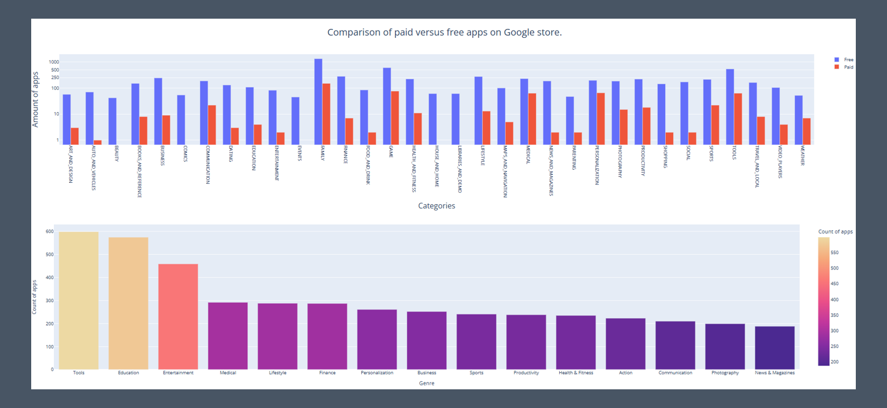

Google Apps
This Google Colaboratory script is an analysis of a dataset related to mobile apps, likely sourced from Google Play Store. The script performs various data cleaning, manipulation, and visualization tasks using Python libraries like Pandas, Plotly, and Plotly Express. It filters out irrelevant columns, handles missing values, removes duplicates, and explores insights such as app ratings, installs, prices, and revenue estimates. Additionally, it visualizes the data through bar charts and pie charts to provide a comprehensive understanding of app categories, genres, and their distribution. The script also compares free and paid apps across different categories. Overall, it's a comprehensive analysis aimed at extracting insights from the dataset and presenting them visually.